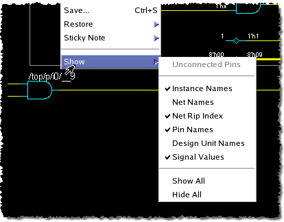
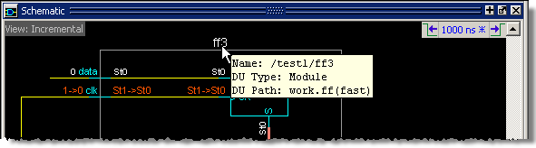
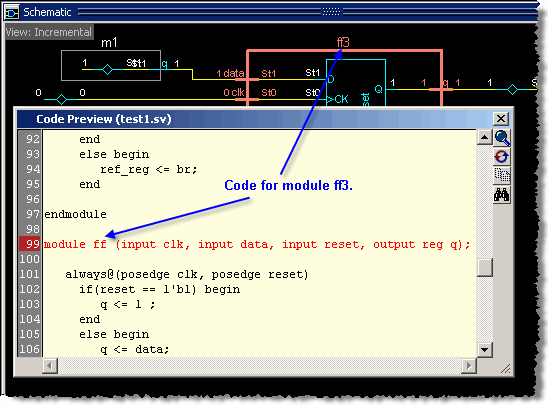

Features of the Incremental View
The Incremental view displays design primitives – logic gates, buffers, fifos, muxs, and so on – as commonly recognized symbols for easy identification.
Colors help you identify different design elements. For example, light gray boxes denote VHDL architectures and Verilog modules. Blue boxes denote processes (Figure 1). Solid blue boxes with dashed white borders denote folded instances (see Folding and Unfolding Instances in the Incremental View).
Figure 1. Colors Help Identify Architectures, Modules, and Processes
You may customize the Incremental view with the selection, or by right-clicking the Incremental view and selecting Show to open the display options (Figure 2). By default, all displayed signal values are for the current active time, as displayed in the Current Time label.
Figure 2. Show Incremental View AnnotationHovering the mouse cursor over a design object opens a tooltip (text popup box) that displays design object information for the specific object type. For example, the tooltip for a module displays the module name, design unit type, and design unit path as shown in Figure 3.
Figure 3. Hover Mouse for TooltipThe tooltip for a signal net displays the net name and its value at the current time.
Double-click any object in the Incremental view to view its source code in a Code Preview window. The code for the selected object is highlighted (Figure 4).
Figure 4. Code Preview Window
The Code Preview window includes a four-button toolbar that provides the options shown in Table 1
View in Source Editor — Opens the code in an annotated source code window where the code can be edited. |
|
Recenter on Target Line — Recenters the highlighted code so it appears in the center of the Code Preview. |
|
Copy Selection — Copies the selected code so it can be pasted into another point in the code, or to a text editor. |
|
|
Find — Opens a Find toolbar at the bottom of the Code Preview window, allowing you to search for a signal, net, register or instance by name. See “Finding Objects by Name in the Schematic Window.” |